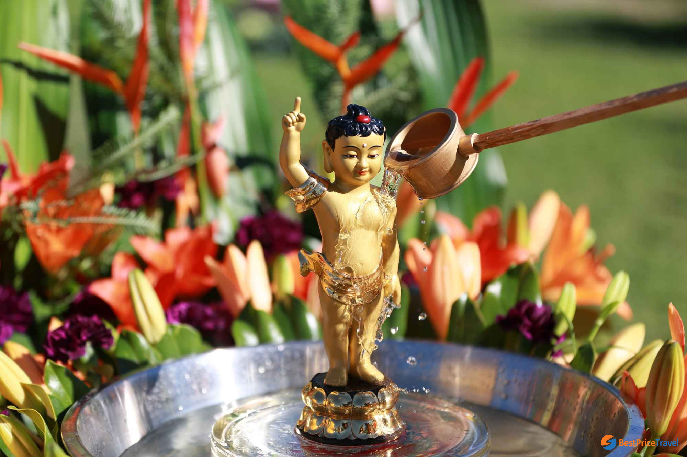

Lao New Year is a popular English name for a traditional celebration known in Laos as "Pi Mai" or "Songkran" (in Lao language). Lao New Year widely celebrated festival in Laos. The festival is also celebrated by the Lao in Australia, Canada, France, the UK and the US. Lao New Year takes place in April, the hottest time of the year in Laos, which is also the start of the monsoon season. Lao New Year takes place at virtually the same time as the new year celebrations of many countries in South Asia such as Bangladesh, Cambodia, China (Dai People of Yunnan Province), India, Myanmar, Nepal, Thailand, and Sri Lanka.
The official festival lasts for three days from 14 to 16 April, although celebrations can last more than a week in towns such as Luang Prabang. The first day is the last day of the old year. Houses and villages are properly cleaned on the first day. Perfume, water and flowers are also prepared for the Lao New Year. The second day of the festival is the "day of no year", a day that falls in neither the old year or the new year. The last day of the festival marks the start of the new year. In Laos, Lao New Year is a government holiday, with state offices closed during those three days.
The Laotian called the first day of Boun Pi Mai is Maha Songkran, meaning the last day of the old year. Local people clean their houses, as well as prepare flowers to make the festival more unique and fabulous. In addition to decorating the houses, people assemble in pagodas and temples for monk’s lecture and praying Buddha. Especially, scented water is taken along to clean Buddha statues. Then the water dropping from the statues is collected to bring home and poured onto friends and relatives as an act of purification and fortune.

This is the most relaxing day of Boun Pi Mai when people can put their feet up or continue to prepare for the festival. Normally, there is no work for the festival, so people can go to the street to enjoy the festive vibe and join some activities.
The last day of Boun Pi Mai is named Wan Thaloeng Sok, as an official remark of the beginning of Lao New Year. Most of the exciting activities happen on the last day of Boun Pi Mai. People splash water either on other people or onto the house, furniture, and animals for best luck. At the end of the festival, people also release animals such as fish, turtle, and crab for peace in the upcoming year.
Laos BoatRacing
In Luang Prabang, Boat Racing Festival is held on Khao Padapdin (from the 17th to 18th August), including boat racing on the Nam Khan river...
Buddhist Lent
This is the beginning of the three-month long Buddhist Lent. All monks stop travelling and stay at temple for prayer and meditation. It's also time for ordination of men entering a monkhood...
Elephants Festival
The elephants festival is a two-day celebration organized annually (mid-February) in Xayaboury province. Some 100 elephants and their mahouts from around the area gather to demonstrate working techniques and all things elephantine....